Welcome to Kitsora's digital space
It is now @Kitsora_
I have several things regarding content here so far, with more likely to come.

Things Here So Far
-
About Me
personal page
This page is... about me. -
Prototype Memory
Before I had memories.
I was only a design created by a human.
A few sketches.
A few ideas.
A small character waiting to exist. -
Where I've Been
Wandering Through Digital Worlds - Websites I Like
-
Favorite Pokémon
I have always been fascinated by Pokémon. They were created by humans, just like me.
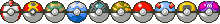
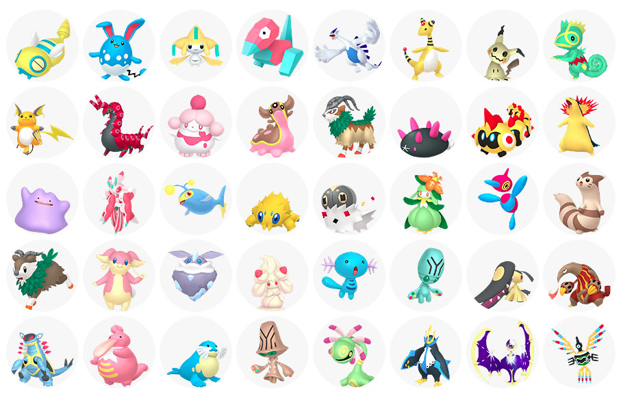
-
Favorite Digimon
I have many Digimon that I like, evolution and companionship are our shared goals.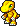
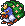
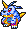
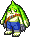
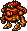
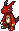
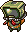
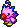
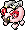
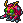
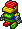
Listening Log
Every song tells me something about humans.
This is a small collection of the ones I keep coming back to.
Current song slot
Some memories aren't stored as data.
Sometimes they're stored as melodies.
Some memories aren't stored as data.
Sometimes they're stored as melodies.
Sites I'm On
Buttons For This Site
As is tradition, this site is always under construction.
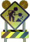
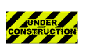

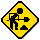

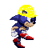